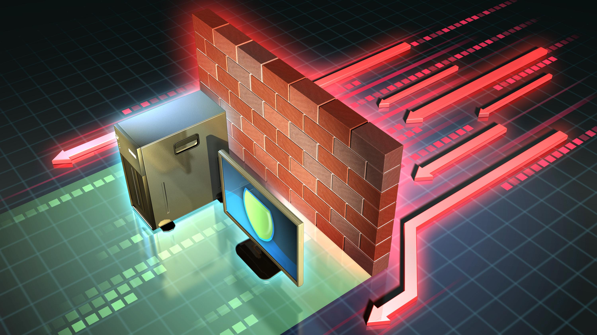

"Ściana Ognia" i jej prawdziwe oblicze w Informatyce!
Zapora Sieciowa (ang. Firewall) to system, pozwalający na zabezpieczanie komputerów, serwerów i całych sieci przed nieupoważnionym przepływem danych. Pozwala ona określić, które urządzenia lub segmenty sieci są godne zaufania i odpowiednio filtrować dostęp do nich.

Może być ona zlokalizowana w bramie sieciowej, na serwerze, komputerze, a nawet routerze w sieci lokalnej.
Zapory, które zlokalizowane są w bramie sieciowej mogą być rozwiązaniami sprzętowymi, programowymi lub hybrydowymi. Jakie pełnią funkcje?
- Kontrolują i zarządzają ruchem w sieci przez kontrolowanie pakietów, monitorowanie połączeń i filtrowanie danych na poziomie aplikacji
- Analizują połączenia przez kontrolowanie komunikacji między hostami i przechowują zgromadzone w ten sposób informacje w tabeli stanu
- Są bramą w sieci prywatnej (VPN) -> Poprzez szyfrowanie, uwierzytelnianie w protokole IPSec oraz wykorzystywanie technologii NAT, która pozwala na tłumaczenie adresów publicznych na prywatne w sieci lokalnej
Zapory znajdujące się w bramie sieciowej nie zapewnią ochrony zasobów sieci lokalnej przed zagrożeniami z wewnątrz sieci. Dlatego zapory takie instalujemy przede wszystkim na komputerach, serwerach czy właśnie routerach. W ten sposób, ochrona będzie odporna właśnie na zagrożenia z sieci lokalnej. A więcej teorii o zaporze możecie znaleźć tutaj.
W systemach Windows Serwer, zapora ta ma nazwę: "Zapora Windows Defender z zapezpieczeniami zaawansowanymi"... czyli w skrócie po prostu -> Zapora Windows Defender. Znajdziemy ją zarówno w narzędziach w Menedżerze Serwera oraz w przystawce mmc. Jest ona dla wielu administratorów wystarczająca bez potrzeby instalacji zapory z poza systemu. Umożliwia ona konfigurację zarówno na komputerach lokalnych, jak i też zdalnie, z wykorzystaniem narzędzi Zasad Grupy (GPO). Ustawienia zapory są zintegrowane z protokołem IPSec, co pozwala na filtrowanie przepływu pakietów na podstawie wyników przeprowadzonych przez niego negocjacji.
Działanie Filtracji
Filtrowanie tutaj polega na sprawdzaniu przesyłanych pakietów za pomocą reguł, które ustawiamy w trakcie konfiguracji i podjęciu decyzji, czy dany pakiet ma być wpuszczony do sieci, czy nie, bo może stanowić zagrożenie dla niej. Jak można przedstawić filtrowanie w paru słowach:
- Przy filtracji, sprawdzane są informacje w nagłówku TCP/IP pakietu
- Odbywa się ono sekwencyjnie, czyli od pierwszego do ostatniego
- Filtry bezstanowe, gdzie filtrowanie odbywa się na podstawie: adresu IP, typu protokołu, portu, źródła i celu pakietu; nie zapamiętuje poprzednich pakietów przez co jest narażony na atak spoofing.
- Filtry stanowe, które zapamiętują pakiety, umieszczają adres zwrotny, gdzie pakiet oczekuje odpowiedzi
- Zalety: Łatwość konfiguracji, nie powoduje dużego obciążenia
- Wady: Trudności w poprawnym skonfigurowaniu reguły, narażenie się na atak spoofing, awarie bądź błędy filtrów spowodują brak prawidłowej ochrony.
- Przedstawiłem tu bardzo ogólne informacje, jednak zachęcam do odwiedzenia tej strony, aby się więcej dowiedzieć o filtracji :)